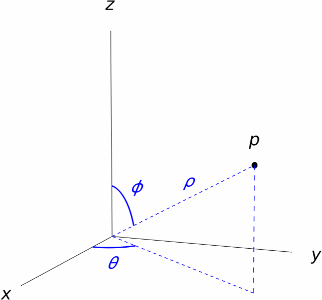
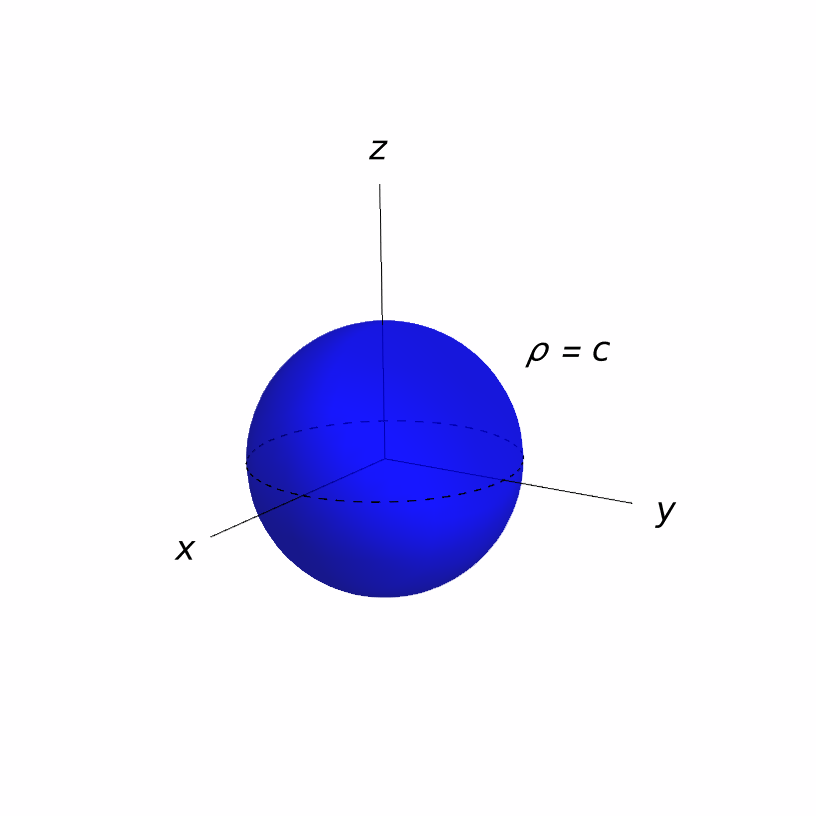
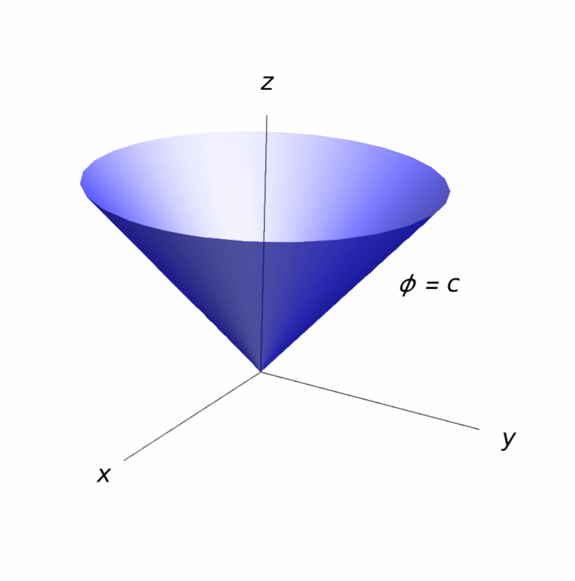
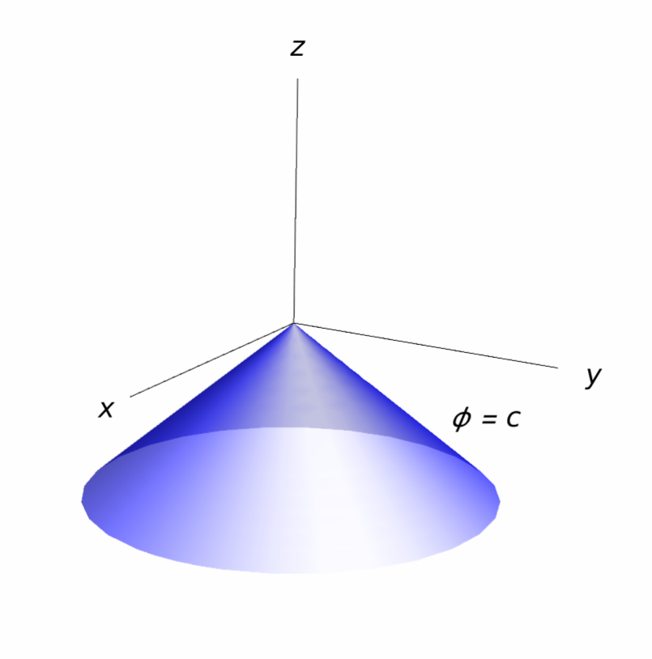
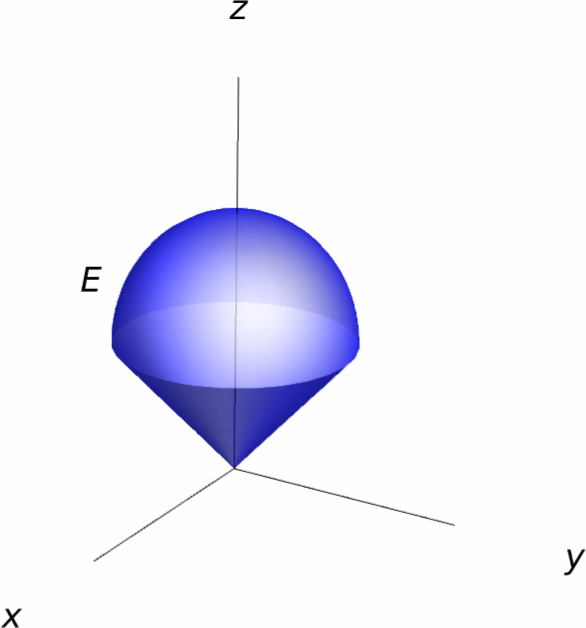

Integration in Spherical Coordinates
In this section we continue the study of polar coordinates in three dimensions. We will discuss the system of spherical coordinates and develop a formula for computing triple integrals in this system.
- $\rho$ is the distance between $p$ and the origin.
- $\theta$ is the angle that the line joining $(0,0,0)$ and $(x,y,0)$ makes with the $x$-axis.
- $\phi$ is the angle (between $0$ and $\pi$) that the line joining $(0,0,0)$ and $(x,y,z)$ makes with the $z$-axis.
Using elementary trigonometry, we can derive the following relations between the Cartesian coordinates $(x,y,z)$ and the spherical coordinates $(\rho,\theta,\phi)$ of a point $p$: \[ \left\{ \begin{aligned} x={}&\rho\,\sin\phi\,\cos\theta,\\ y={}&\rho\,\sin\phi\,\sin\theta,\\ z={}&\rho\,\cos\phi. \end{aligned} \right. \] Moreover, \[ \rho=\sqrt{x^2+y^2+z^2}. \]

Solution.
If $(\rho,\theta,\phi)$ denote spherical coordinates for $p$, then we have \[ \rho=\sqrt{\frac{81}{16}+\frac{27}{16}+\frac{9}4}=\sqrt{9}=3. \] In addition, since $z=\frac32>0$, we know that $\phi$ lies between $0$ and $\frac{\pi}2$. Now, $3\cos\phi=\frac32$, so \[ \cos\phi=\frac12 \implies \phi=\frac{\pi}3. \] To find $\theta$, we use the fact that \[ \left\{ \begin{aligned} -\frac94 ={} & 3\sin\frac{\pi}3\,\cos\theta = \frac{3\sqrt{3}}{2}\cos\theta \implies \cos\theta=-\frac{\sqrt{3}}{2},\\ \frac{3\sqrt{3}}{4} ={} & 3\sin\frac{\pi}3\,\sin\theta = \frac{3\sqrt{3}}{2}\sin\theta \implies \sin\theta=\frac{1}{2}.\\ \end{aligned} \right. \] This gives $\theta=\frac{5\pi}6$, so a set of spherical coordinates of $p$ is \[ \left(3,\frac{5\pi}6,\frac{\pi}3\right). \]
Solution.
We can find the rectangular coordinates $(x,y,z)$ of $q$ by using the formulas \[ \left\{ \begin{aligned} x={}&1 \cdot\sin\frac{-2\pi}{3}\cdot\cos\frac{\pi}{4} = -\frac{\sqrt{3}}2 \cdot \frac{1}{\sqrt{2}} = -\frac{\sqrt{3}}{2\sqrt{2}},\\ y={}&1 \cdot\sin\frac{-2\pi}{3}\cdot\sin\frac{\pi}{4} = -\frac{\sqrt{3}}2 \cdot \frac{1}{\sqrt{2}} = -\frac{\sqrt{3}}{2\sqrt{2}},\\ z={}&1\cdot \cos\frac{-2\pi}{3}=-\frac12. \end{aligned} \right. \] Therefore, $(x,y,z)=\left(-\frac{\sqrt{3}}{2\sqrt{2}},-\frac{\sqrt{3}}{2\sqrt{2}},-\frac12\right)$.
Just as in the case of cylindrical coordinates, we can get a better intuition of the spherical coordinate system by plotting the surfaces corresponding to simple equations involving the coordinates $(\rho,\theta,\phi)$.
-
The surface $\rho = c$ is a sphere centered at the origin with radius $c$.

-
The surface $\theta = c$ is a vertical half-plane that makes an angle
of $\theta$ radians with respect to the $x$-axis.

-
The surface $\phi = c$ is a cone when $c\neq \frac{\pi}{2}$.
This cone branches upward when \(0< c <\frac{\pi}{2}\), and it branches
downward when $\frac{\pi}{2}< c <\pi$.
In the case that $c=\frac{\pi}{2}$, this surface is merely the $xy$-plane.


Integration in Spherical Coordinates
Here we will give a formula that will allow us to switch to spherical coordinates when performing a triple integral.
Suppose that we are given a solid region $E$ whose description in spherical coordinates is \[ E = \big\{(\rho,\theta,\phi)\mid \alpha\leq \theta\leq \beta,\, \gamma\leq\phi\leq\delta,\, g_1(\theta,\phi)\leq\rho\leq g_2(\theta,\phi)\big\}. \] Using a method similar to the one that we employed to obtain the change of variables formula for polar coordinates , it is possible to derive a formula for integrating any continuous function $f\colon E\to\RR$.
Solution.
Let us take $E$ to be the sphere of radius $R$ centered at the origin. In spherical coordinates, the sphere is given by \[ E = \big\{(\rho,\theta,\phi)\mid 0\leq\rho\leq R,\, 0\leq \theta\leq 2\pi,\,0\leq\phi\leq\pi \big\}. \] Consequently, the volume of $E$ is \[ \begin{aligned} V(E) ={}& \iiint_E 1\,dV = \int_{0}^{2\pi}\int_0^\pi\int_0^R \rho^2\sin\phi\,d\rho \,d\phi\,d\theta = \int_0^{2\pi}\int_0^\pi \bigg[\frac{\rho^3\sin\phi}{3}\bigg]_{\rho=0}^{\rho=R}d\phi\,d\theta \\={}& \int_0^{2\pi}\int_0^\pi \frac{R^3\sin\phi}{3}d\phi\,d\theta = \int_0^{2\pi}\bigg[-\frac{R^3\cos\phi}{3}\bigg]_{\phi=0}^{\phi=\pi}\,d\theta = \int_0^{2\pi}\frac{2R^3}{3}d\theta = \frac{4}{3}\pi R^3. \end{aligned} \]
Solution.
First of all, note that the equation of the cone in spherical coordinates becomes $\rho\cos\phi=\rho^2$, which is equivalent to $\rho=\cos\phi$.
As for the cone, its equation in spherical coordinates becomes \[ \begin{aligned} \rho\cos\phi ={}& \sqrt{\rho^2\sin^2\phi\big(\cos^2\theta+\sin^2\theta\big)} = \rho\sin\phi. \end{aligned} \] Consequently, $\cos\phi=\sin\phi$, which is only possible if $\phi=\frac{\pi}4$. This means that, in spherical coordinates, the region $E$ is given by \[ 0\leq \theta\leq 2\pi,\quad 0\leq \phi\leq \frac{\pi}4,\quad 0\leq \rho\leq \cos\phi. \]

Therefore, \[ \begin{aligned} V(E) ={}& \iiint_E 1\,dV = \int_0^{2\pi}\int_0^{\frac{\pi}4}\int_0^{\cos\phi} \rho^2\sin\phi\,d\rho\,d\phi\,d\theta = \frac13\int_0^{2\pi}\int_0^{\frac{\pi}4}\cos^3\phi\,\sin\phi\,d\phi\,d\theta. \\ ={}& -\frac{1}{12}\int_0^{2\pi}\big[\cos^4\phi\big]_{\phi=0}^{\phi=\frac{\pi}4}\,d\theta = -\frac{1}{12}\int_0^{2\pi}\frac{-3}{4}d\theta = \frac{\pi}8. \end{aligned} \]
Solution.
In spherical coordinates, the region $E$ is \[ E = \left\{(\rho,\theta,\phi)\mid 0\leq \theta\leq\frac{\pi}2,\, 0\leq\phi\leq\frac{\pi}2,\,0\leq\rho\leq 2\right\}. \] Thus, changing to spherical coordinates, we get \[ \begin{aligned} \iiint_E (x+z)\,dV ={}& \int_0^{\frac{\pi}2}\int_{0}^{\frac{\pi}2}\int_0^2 (\rho\sin\phi\,\cos\theta+\rho\cos\phi)\rho^2\sin\phi\, d\rho\,d\phi\,d\theta\\ ={}& \int_0^{\frac{\pi}2}\int_{0}^{\frac{\pi}2}\int_0^2 \rho^3(\sin\phi\,\cos\theta+\cos\phi)\sin\phi\, d\rho\,d\phi\,d\theta \\ ={}& 4\int_{0}^{\frac{\pi}2}\int_0^{\frac{\pi}2} \big(\sin^2\phi\,\cos\theta+\sin\phi\cos\phi\big)\,d\phi\,d\theta. \end{aligned} \] This integral splits into the integrals \[ \begin{aligned} 4\int_{0}^{\frac{\pi}2}\int_0^{\frac{\pi}2} \sin^2\phi\,\cos\theta\,d\phi\,d\theta = 4\int_{0}^{\frac{\pi}2}\sin^2\phi\,d\phi \cdot \int_0^{\frac{\pi}2}\cos\theta\,d\theta = \pi \end{aligned} \] and \[ \begin{aligned} 4\int_0^{\frac{\pi}2}\int_0^{\frac{\pi}2}\sin\phi\cos\phi\,d\phi\,d\theta ={}& 4\int_0^{\frac{\pi}2}\bigg[\frac{\sin^2\phi}2\bigg]_{\phi=0}^{\phi=\frac{\pi}2}\,d\theta = 4\int_0^{\frac{\pi}2}\frac12\,d\theta = \pi, \end{aligned} \] so we can conclude that \[ \iiint_E (x+z)\,dV=2\pi. \]